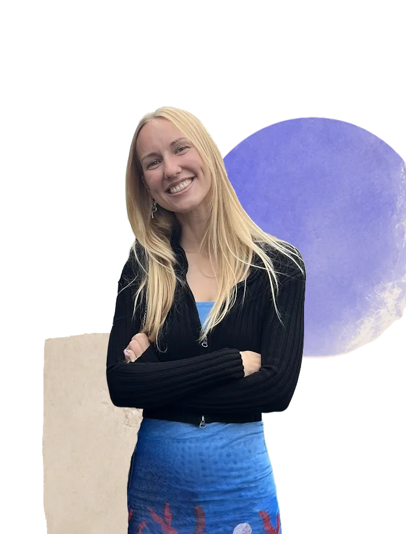

2026 - nu
Multimediedesign, Erhvervsakademi København
Jeg arbejder med designprocesser, brugerforståelse, brugergrænseflader og udvikling af digitale løsninger.
Jeg hedder Line Bøgh, og jeg læser multimediedesign på Erhvervsakademi København.
Jeg kommer med en baggrund i kommunikation og medier. På denne uddannelse udforsker jeg, hvordan mine erfaringer med formidling kan kombineres med design, brugeroplevelse og kode.
Jeg er særligt interesseret i mødet mellem kreativt design og kodning.

Jeg arbejder med designprocesser, brugerforståelse, brugergrænseflader og udvikling af digitale løsninger.
Jeg har specialiseret mig inden for kommunikation og digitale medier med særligt fokus på kreative erhverv.
Jeg har opbygget en stærk analytisk og formidlingsfaglig profil med erfaring i skriftlig kommunikation og kritisk refleksion.
Jeg havde redaktionelt ansvar for danske og engelske hjemmesider og arbejdede med klar, målrettet digital formidling.
Jeg havde ansvar for organisationens kommunikation og branding på tværs af web, nyhedsbreve, blog og digitale platforme.
Jeg begyndte på multimediedesign med en baggrund i kommunikation, webindhold og digital formidling. På 1. semester har jeg bygget videre på den erfaring og fået en mere praktisk forståelse for, hvordan digitale løsninger udvikles fra idé til færdigt produkt.
Gennem semesteret har jeg arbejdet med research, idéudvikling, moodboards, styletiles, wireframes, prototyper, brugertest og kodning. Det har givet mig en større forståelse for, hvordan indhold, visuelt design, brugeroplevelse og funktionalitet hænger sammen i udviklingen af et website.
En af de største faglige udviklinger for mig har været arbejdet med HTML, CSS og JavaScript. Kode var nyt for mig i starten, men gennem semesteret er det blevet et element, jeg er blevet bidt af og finder meget spændende at arbejde med. Jeg har især fundet det interessant at omsætte kreative idéer og prototyper til funktionelle websites.
Jeg tager ikke kun konkrete tekniske færdigheder med mig fra 1. semester, men også en mere metodisk tilgang til kreativitet og digitale projekter. Jeg er blevet mere bevidst om at træffe designvalg med afsæt i brugere, indhold og formål og om at se udviklingsprocessen som noget, der løbende kan testes, justeres og forbedres.